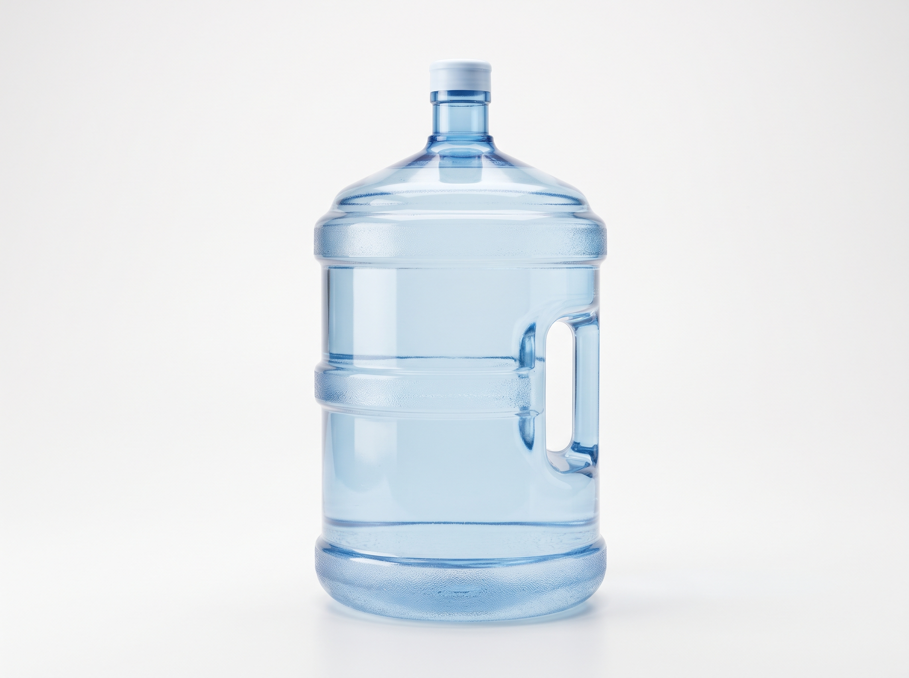
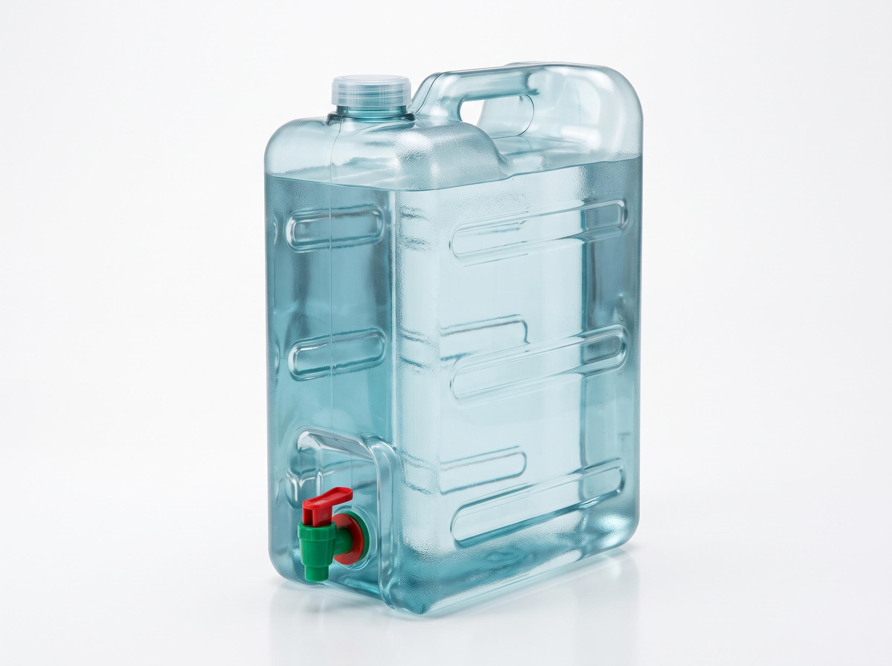
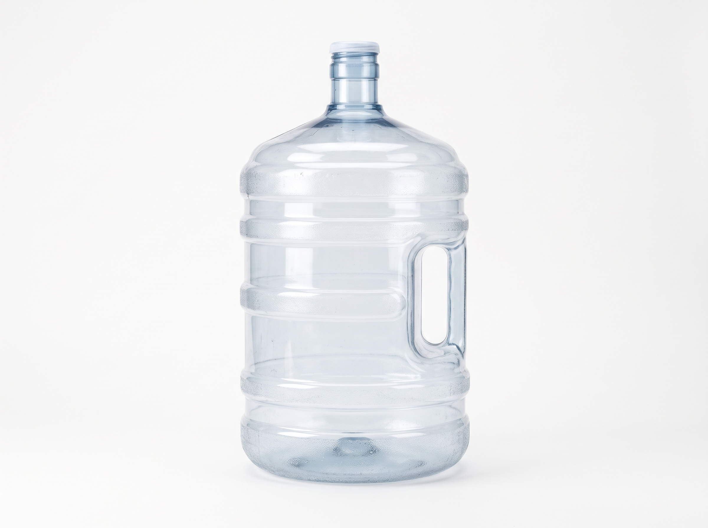

Refill ordersGallons and bottles, your way
Daily deliveryPick a date and time slot
Live order statusFrom refill to doorstep
Container ledgerEmpties and refills, counted
Refill options
Choose what you need, we handle the rest.


Refills made simple
From the first tap to the last empty container, every step is tracked.
01
Place your order
Choose your product, number of containers or gallons, delivery address, and a preferred date and time slot.
02
Station refills
Staff confirm the order, refill the containers, and update the status as it moves along.
03
Rider delivers & logs containers
An assigned rider delivers your order, then records the containers delivered and empties collected.